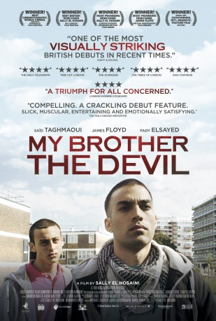
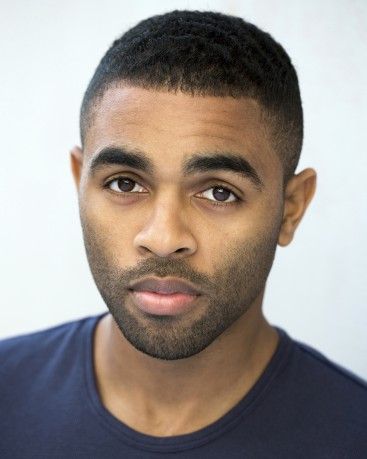
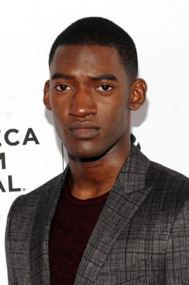

#5047 Mein Bruder der Teufel
Alternativ: My Brother the Devil
 
 IMDB-Wertung: 6.6 / 10
IMDB-Wertung: 6.6 / 10  Metascore: 0
Metascore: 0 
Mo is a young boy growing up in a traditional Egyptian household, but beyond the front door of the family's modest London flat is a completely different world - the streets of Hackney. The impressionable Mo idolizes his handsome older brother Rashid and wants to follow is his footsteps. However, Rashid, a charismatic and shrewd member of a local gang, wants a different life for his little brother and deals drugs hoping to put Mo through college. One eventful summer, Rashid's sexual awakening forces Mo to confront his own fears and phobias and threatens to tear the brothers apart.
Jahr: 2012
Dauer: 107 Minuten
FSK: 12
Land: England Studio: Edel motionTonspuren: DTS - ,
Untertitel: Deutsch,
Auflösung: 1080p (1920x800) Größe: 9216 MB
Genre: Drama, Liebe
Regisseur: Sally El Hosaini
Drehbuch: Golden Way Creative Group
Soundtrack:
Darsteller:
- James Floyd als Rashid
- Fady Elsayed als Mo
-  Anthony Welsh als Izzi
- Amira Ghazalla als Hanan
 Nasser Memarzia als Abdul-Aziz
Nasser Memarzia als Abdul-Aziz- Arnold Oceng als Aj
 Saïd Taghmaoui als Sayyid
Saïd Taghmaoui als Sayyid- McKell David als Demon's Boy
-  Malachi Kirby als J-Boy
- Elarica Johnson als Vanessa
 Letitia Wright als Aisha
Letitia Wright als Aisha- Leemore Marrett Jr. als Demon
- Ashley Thomas als Lenny
- Nicola Harrison als Secretary
- Frieda Thiel als Kayla
- Christopher Hutchins als Phonebooth Customer
 Susan Fordham als Mourner , uncredited
Susan Fordham als Mourner , uncredited- Damson Idris als Pallbearer , uncredited
 Aymen Hamdouchi als Repo
Aymen Hamdouchi als Repo- Shyam Kelly als Devonte
- Zachary Scipio als Demon's Younger 1
- Ryan Townsend als Demon's Younger 2
- Kemi Martin als J-Boy's Girl
- Mohammed Mansary als Faisal
- Denzel Assiamah als Bobo
- Yusra Warsama als Sonya
- Aaron Ishmael als Jamie
- Savannah Gordon-Liburd als Hackney Girl
- Naresh Bhana als Tattooist
- Kirsty Todd als Tattoo Parlour Receptionist
- George Oliver als Crackhead
- Michael-Joel David Stuart als DMG Younger 2
- Sylvia Aman als Junkie Mum
- Ebony White als Jamaican Granny
- Rob Waran als Kickboxer
- Lawrence 'Justice' Richards als Rapper
- Deshon Huggins als Rapper
- Makeda Thomas als Kayla's Friend
- Hawa Farid als Aisha's Mother
- Emrah als Turkish Shopkeeper
- Sari Qasem als DMG Gang Boy
- Raymond Gibson als DMG Gang Boy
- Corey Fagan als DMG Gang Boy
- Tristan Fagan als DMG Gang Boy
- Chris Blay als DMG Gang Boy
- Jaden Brown als DMG Gang Boy
- Raheem Bailey als DMG Gang Boy
- Rasheed Bailey als DMG Gang Boy
- Markus Mason als DMG Gang Boy
- Malaki Henry als DMG Gang Boy
Datei: X:\2012(G-M)\Mein Bruder der Teufel (2012, FSK12, 1920x800).mkv seit 22.12.2016
Festplatte: HD 2012(A-M)
 Es gibt insgesamt 112 Filme in der Gruppe '2012(G-M)'
Es gibt insgesamt 112 Filme in der Gruppe '2012(G-M)'